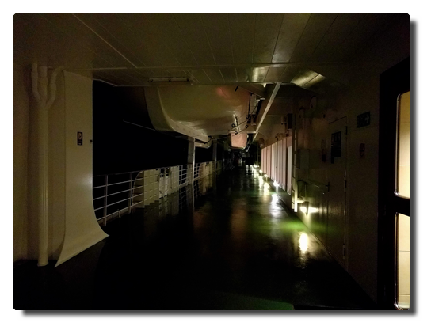

Love Boat - The Real Story. Cruise to the high North
Prologue
The long planned family vacation to the Northern Lighs is close. It was distinct from the beginning that it will be a cruise. Everyone who would get to know of these plans would then immediately ask the one word question "Hurtigrouten?". The one word answer to it is "No.", the more elaborate is "No, we decided to go with AIDA primarily because of the easy arrival within Germany. Yes, I do believe that we will be spared the loud holiday club and party atmosphere like on Mallorca on this route."
The journey is called "Winter in the high North" and part of the travel operator's catalogue since 2017. You can read two travel reports in German here:
- Winter im hohen Norden mit AIDAcara
- Reisebericht: Nordlichter und Winter im hohen Norden mit AIDAcara
Notes
-
My notes have been unecpectedly evolved into a lengthy report (>5000 words) separated into several articles:
- Hamburg
- Das Boot
- Haugesund
- Day at the sea
- Bodø
- Honningsvåg
- Tromsø
- Trondheim
- Bye Trondheim
- Bergen
- Day at the sea
This is the complete report. Comments are open on the single articles. Have fun reading.
-
Initially some bullet points were written down to remember for filling out the AIDA feedback form but I left these here. I put these in a blue box.
- Personal tips and side notes are put in an orange box.
AIDA feedback
... is in this blue box.
Anke's tips
... look like this.
Translation incomplete.
Translation into English is still in progress, articles to go: Day at the sea, Honningsvåg, Tromsø, Trondheim, Bye Trondheim, Bergen, Day at the sea
Day 1. Hamburg
Habemus luggage
We are four adults and one three-year old on a two-week winter vacation. To almost everybody's surprise the complete luggage is stashed silently into the car's trunk. Being either in good or just indifferent mood we are heading Hamburg. A few hours later we arrive at the shuttle service's parking lot, hand over our luggage, check in and there we are standing on the boat.
The ship seems like an ant hill - in the inside passengers are swarming looking for cabins and orientation and crew is distributing the suitcase masses and fulfilling all their other tasks. After settling and coming down in the strange surrounding our small first-time cruise travel party decides to have a coffee before departure.
 |
|---|
| Arrival |
The beverage billing system
We had booked the alcohol-free beverage flat in advance and an additional card at the check-in. That thing should now let magically appear some hot beverages on the table.
After getting our drinks to our surprise we got a receipt to sign. We confronted the service staff member with our confusion but that was not very helpful because his English skills were close to non-existent. That is going to be some fun...
Finally I was able to retreive the relevant information from the slightly overstrained and a bit scared very young staff member. All drinks are called to account at the normal price either to your cabin account using the bord card or to the flatrate account using your flatrate card. In every case you have to verify the recept with your cabin number and sign. The receipts are collected, scanned and available for inspection upon request (to find out abuse or wrong billings). But nobody tells you that.
AIDA feedback
Even though the stated language on board is German and part of the staff are native speakers (reception, trip counter, guides/scouts, restaurant bosses) you are probably better off speaking English in that international staff. Regarding the target group of travelers especially on these winter routes this should be better communicated. Often middle-aged or elderly people do not speak any English.
Cast off!
Six o'clock sharp we are standing on deck 6 to watch the ship slowly depart from the pier and Hamburg harbour into the night. There is dinner and the welcome show at the theatre waiting.
Sometime around 10 PM, we are heading Danmark, it has become quiet on the ship. My day, the whole week were long and busy and eventful so I decide to calm down in the hamster wheel at the finess studio on deck 9. Best sleep tonight.
 |
|---|
| Sailing away from vespertine Hamburg harbour |
Day 2. Weekend and sunshine
The bright winter sun pushes the passengers onto the upper decks, covered in yellow fleece blankets people are laying in the sun like being on a holiday.
Plans and information
Now we are getting serious on planning our next steps: what can you do onboard? What are interesting shore excursions? The AIDA board portal becomes a permanent open browser tab; one finds any relevant information for the life onboard there: access to the cabin account, ship position, speed and course data or weather - the bridge is now under surveillance - dayplanner for events, schedules, menu plans etc.
This cruise is promoted as part of the "AIDA Selection tours". This concept is applied to niche routes like winter cruises in the northern hemisphere or long-tail world cruises. The standard light entertainment programme is extended by lectures and workshops about historic and scientific topics adjusted to the cruise.
I attended all of the scientific edutainment programme that was astonomy related. Of course one lecture was about polar lights. One may guess that these lectures were not university astrophysics level. As a person being not very fond of classic cruiseship entertainment I really enjoyed these events.
AIDA feedback
From my personal persepective the edutainment programme was a real enrichment to the overall travel experience and could even be more extended. I witnessed that the historic/social and scientific oriented content also met many passengers' approval. In future travel planning I will definitely factor in the existence of this kind of edutainment aboard.
Coffeecalypse
In the afternoon there is "Coffee and pie" on the Calypso restaurant's schedule, that sounds cosy, doesn't it? IT IS NOT! Arriving at the resaurant we realise that the rest of the ship is already present. There is an incredible crowd at the almost empty pie buffet, no unoccupied seats at the tables, too many people, too noisy, what a mess.
I hatch a plan that we take seats outside of the restaurant while I go back inside and organise some coffee and sweets - I'm just more agile acting alone.
Beverage flat, the second time
The coffeepots on the table are defended by the bloodhounds so I withdraw and step up to the coffee automat. The thing that not only makes me wonder is that I am asked to put in my board card, not my beverage flat card.
And then I learn that coffee from automats in the restaurants is charged to the cabin account. If I order a coffee at one of the bars it is covered by the beverage flatrate. Sounds weird but fact!
Step by step it becomes clear what is covered by the flatrate and what is not:
-> X is served in bottles: not covered -> X comes from a bottle and is mixed in a alcohol-free cocktail: covered.
Sounds weird but fact!
AIDA feedback
As staff or experienced passenger you might have internalized these details but it is not really intuitive nor transparent. In my opinion it was easy to solve this huge potential of irritation and frustration with a simple labelling system on menus and automats.
Dinner disaster
This are more complicated when travelling with a three-year old. He is too old to be pacified with baby food and then be parked afterwards and on the other hand to young to adjust to the needs of adults.
At the buffet restaurants dinner is from 6 to 9 PM. To this second day we did not see through the guests dynamics or just did not pay much attention. That now takes vengeance.
About 7 o'clock we enter the Calypso restaurant. Our serenity turns into irritation because we cannot find a table for the five of us. Hoping that this task would be more successful to find a table for three in the Markt restaurant, I propose to separate so we can manage to get the kid fed. Well, two minutes later K. comes out the Markt restaurant nodding her head "They are all just sitting in front of their (wine) glasses."
In this moment it fell like scales from my eyes why the Markt restaurant closes for half an hour during dinner time - it is the only chance to have a seat after 7 PM.
For the three-year old this option turns out being too late and so dinner becomes the most stressful part of the whole day.
AIDA feedback
Closing the restaurant for half an hour is absolutely crucial. In addition to that you could establish some "kids tables" (right near the entrance) where you could also store raised seats) where families with children have priority. The priority could be easily enforced by not serving wine at these tables. Maybe this could also be interesting for dry alcoholics.
Airing
|  |
|---|
| Baby, it's cold outside... |
After one complete day at the sea and the stressful dinner I prepare to go for a walk on the upper decks. I am logging my 70 minutes walk with Strava to prove that I can go on water...you can't explain that!
Returning to the AIDA bar to my surprise K. and M. just take part in a discofox dance competition - and they win! - of course they do because they are really good and trained at dancing together. Great cruiseship atmosphere. Cheers!
Day 3. God morgen, Haugesund!
We are on time landing in Haugesund which is our first and most southern stop. After having breakfaast we prepare for our shore excursion.
 |
|---|
| Haugesund havn |
Soon we are strolling through the small inner city and stopping by at the tourist information because we are experienced individual tourists and know our duties. Haugesund's main attraction is within walking range so we visit the combined monument Haraldshaugen (with the Haraldstøtten obelisk) und Krosshaugen (that with the stone cross) in memory to the rule of king Harald Hårfagre (Harald Fairhair) and the country's christianity.
 |
|---|
| Harald Hårfagre |
My travel mates decide to take a rest after the walk and I decide to fight at the pie buffet again. I am triumphant and celebrate my victory with cake and tea.
 |
|---|
| No human or other creature was harmed filling this plate. |
We depart in the early evening and face another complete day at the ocean. Later on the winds intensify, at Beaufort force 7 both of our male travel party members call in seasick.
The noise of the sea
Travelling by ship is done on purpose. Being on the way moving is part of the destination. It is proven that maritime surroundings do have positive health effects on humans. One can even buy recordings of maritime and water noises or just listen to these on YouTube.
That is interesting because for humans the ocean is a hostile ecosystem full of dangers and therefore a natural frontier. To us the sound of the rushing sea is fascinating and we are able to watch the movements of the water and the waves for eternity. Instead of calming us down it should make us freak out because without the safety area of the steely colossus we would be dead within minutes.
Friendship
Last summer during a sailing trip on the river Havel I got into a heavy and fast moving thunderstorm with winds between 7 to 9 bft causing huge damages on land. We were able to take our position in a bay to let the storm pass over us maneuvring with as little sail as possible. That worked pretty well, still that was a tough and shaky situation involving massive amounts of water from various directions.
Reminded of this event I watch the waves and try to think through the thought experiment we sometimes talk about at sunny days: if we piloted the boat in direction New York, how far would we get in that nutshell (Friendship 24 sailing boat)? When well prepared and equipped and a bit lucky regarding the weather one can get mildly optimistic but if you are knocked out or thrown overboard at 10 bft and 12 meter high waves your remains will not ever be found.
That brings me to another question:
When do people realize somebody is missing?
I did not count how often I was advised not to pull a Küblböck in advance of the journey. In case you do not know (which is probably the case): Daniel Küblböck was a casting show/reality TV personality who had become a last sad media footnote by jumping off a cruiseship into the ocean in some previous year.
In this video by a travel journalist it is stated that up to 19 persons vanish from cruiseships every year.
Jumping off a sailing ship into the ocean is a very, very safe method of committing suicide. Even if there are witnesses it is almost impossible to keep track of the lost person in the water if the person is conscious and gets back to the water surface at all until rescue measures are initiated. Any person who ever has performed a "man/buoy over board" maneuvre will comprehend this.
If one goes overboard without witnesses, it will not be noticed at first.
 |
|---|
| The Red Telephone |
Crew
Missing crew is probably noticed quite rapidly. From my observation the staff maintaining the outer decks seem to always work in teams of two or more. Taking this premise into account a missing crew member should be recognized within working shift but considering these guys do not do a 9 to 5 job here this may also be half a day. By the beginning of the next day's working shift it will be noticed.
Time frame: 0.5 to 24 hours? Are there a mandatory report intervals for outer deck staff?
Passenger
In this case it is reasonable to differ between single and non-single travellers.
One can move freely onboard and is not forced to leave the ship at ports. It may be likely that a missing single traveller is noticed on check out. But there is the housekeeping factor. Do they report if a cabin is not getting used for a while? It is possible in theory that that person stays overnight in other cabin(s) or mastered slepping on barstools...who knows?
So does the housekeeping report on this and if so, when? From day one, two, three...?
Time frame: one to several days?
For people not travelling alone the degree of social binding is probably crucial. There are many corners for retreat on a cruiseship. The larger the ship the higher the probability not to run into each other. Even on the small AIDAaura I met new people until the end of the trip that I was convinced not having seen during the last two weeks before.
A part of a married couple might get suspicious at the next meal or at least when going to bed if the other is absent. But there are also people in groups sharing cabins. A sleepover in another cabin might appear inappropriate to some but not impossible. But afterwards the person will have to return to the cabin sooner or later so the time frame is extended to maybe a day.
Time frame: minutes to 24 hours?
References
- Spotify playlist: 5 hours of sea noise
- Spiegel Online: Wilfried Erdmann: Erster deutscher Weltumsegler 1967/68 (German)
- Wikipedia: Blauwasserrouten (German)
- GEO: Darum wirken Naturgeräusche so entspannend (German)
- stern: Warum uns das Meer glücklich macht (German)
- YouTube: 9 Things Cruise Lines Don't Want You To Know. And Won't Tell You
Day 5. Land in sight
The day starts with an early workout. When the ship is close to the second harbour Bodø we are presented with a breathtaking panorama view. This day promises to become great.
 |
|---|
| Postcard motif |
After the last, turbulent night the passengers cannot wait to leave the boat. Excursion busses are standing right in front of the ship and our little tourist party prepares for the usual walk into the town.
We were "warned" in advance by other passengers that Bodø is such an ugly town. The cause of that condition is their almost complete destruction in an air strike by the German Luftwaffe in 1940. Many houses have been replaced by more untraditional buildings and therefore the central pedrestrian area looks similar to their German counterparts.
In a travel report I read afterwards the author was downright outraged to have been forced to stop at this unsightly place. This really has made me angry: so do you want to experience the country or not? Norway like the rest of the world is no fairyland and has more to offer than beautiful landscapes and overpriced sledge dog trips for tourists.
If you open your eyes a little you can discover interesting sites even in Bodø like the local pieces of streetart.
 |
|---|
| Streetart: "Malstrøm" by David de la Mano |
On our exploratory walk I spot a supermarket - it's time to prove my Norwegian language skills and buy some local specialities: brunost (brown cheese) and lefsegodt (soft pastry with a kind of cream cheese).
 |
|---|
| A German walks by a Norwegian kiosk. Hitler. ROFL. (slightly out of focus) |
In the afternoon I go for a walk again, enjoy the unbeknown surroundings just to be back on board in time for dinner.
 |
|---|
| Pretty corners in Bodø |
Cast off, we are sailing north!
Anke's anecdotic tip
I love walking around but from the third day on I missed riding my bike. It somehow crossed my mind: You should have taken a folding bike with you. Each passenger can check in with two large pieces of luggage. If you get along with one like me it should not be problematic to take an adequately packaged folding bike (± 12 kg) on the trip. That would significantly increase the range of motion on land.
The night of nights
The evening starts quiet. This will change within a short period of time. Since experiencing the difficult weather conditions on the second day we have become addicted to the ship's own local web page - the bord portal - where you get information about speed, course, weather conditions and everything that happens on the ship. We are well-informed.
K. is stunned: she spotted green haze on the picture of the bow cam. M. is sent upstairs to evaluate the situation. I'm still doubtful but about to wrap up warm. We enter deck 11 which is already slightly crowded with some people and their expensive photo equipments. The sky is cloudy and the almost full moon is illuminating the ocean's surface and land masses of the Lofoten islands. This alone creates a breathtaking, mystical atmosphere.
People whisper and watch on each other's camera displays and suddenly somebody says "There it is." We stare into the sky and see: nothing.
We keep staring and start seeing the difference between clouds illuminated by the moon and diffuse haze. Yes, the hazes are greenish and slightly moving. So this should be it?
We remain outside in this winter night staring into the night sky. The clouds slowly dissolve. The weather forecast predicts lots of clouds and rain for the next days and somebody says "Tonight's the night of nights."
Deck 11 has awoken. The news of polar lights sightings are transmitted into steel Moby Dick. There is lively movement of people going in and out.
Tonight the sky is giving us the green light. Freezing and excitement - the loyal companions of the northern lights - stay with us until 2 o'clock in the morning.
What a great day.